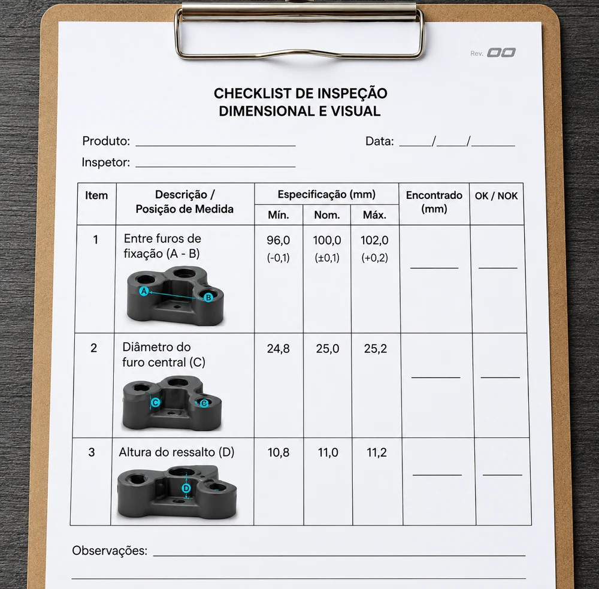

Inspeção em papel
Checklists manuais, imagens pequenas, preenchimento sujeito a falhas e dificuldade para localizar inspeções anteriores.

- Risco de preenchimento incorreto
- Baixa legibilidade e imagens pequenas
- Dificuldade de consulta ao histórico
- Dependência de documentos físicos